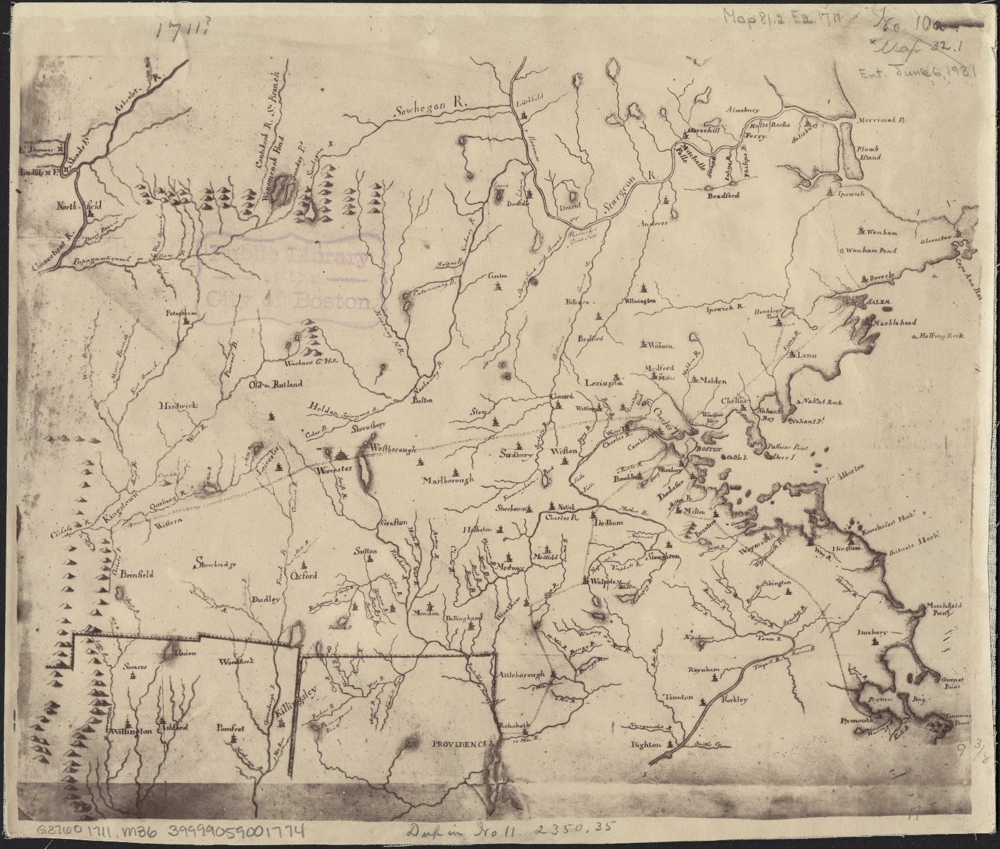
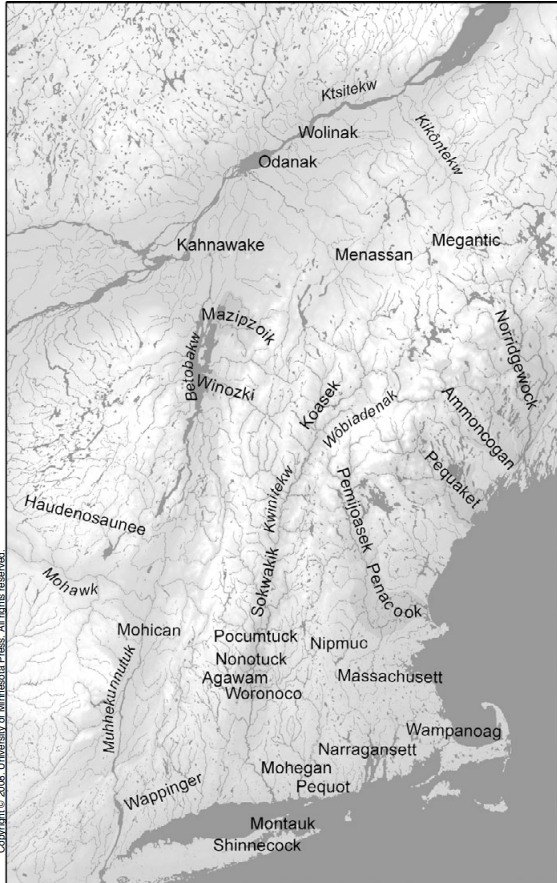

Adam Saffin
Boston & Bristol, New England · c. 1694–1714
Dispossession in colonial New England
The legal struggles of Adam, an enslaved man in late seventeenth-century Massachusetts, show how possession, bondage, and freedom were negotiated under the evolving rules of colonial law. Adam’s claim to freedom rested on a conditional manumission agreement with John Saffin, who refused to recognize that its terms had been fulfilled. His experiences complicate the static framework of “prior possession” by showing freedom being contested through legal agreements and social relationships.
Rather than merely relying on abstract claims to self-ownership, Adam challenged his subjugation by navigating existing contractual arrangements, municipal agreements, and regional networks of community support. His case demonstrates how the dispossessed worked within and against colonial structures to contest claims of ownership, reshaping their relationships to their enslavers and peers alike.
In 1701, this conflict reached the Massachusetts courts in Adam v. John Saffin. In the surviving record, Adam asserted that he was “a freeman” and owed Saffin “no Service.” The legal proceedings centered on a conditional manumission agreement, placing the terms of Adam’s freedom inside a legal system that treated him as property. By examining Adam’s navigation of the judicial apparatus, we can see anti-dispossessive politics operating within the heart of early New England.

Black Labor and Native Land in Colonial New England
The trans-Atlantic slave trade, discussed in Theory & Method, set the scene for Adam’s case. In colonial New England, the appropriation of Native land and Black labor unfolded as interlocking processes rather than as separate histories. That relationship was made material through roads, commons, municipal orders, and the labor required to sustain them.
In 1708, Boston ordered free Black men, including Adam, to work on a road between Boston Common and Beacon Hill. The road connected a settler commons built on appropriated Massachusett land to a municipal system that extracted Black labor.

Interactive Map
Adam Saffin Story Map
Follow the geographic sequence assembled for the Adam case in the team’s KnightLab StoryMap.
Figure 2.3. Adam Saffin StoryMap. KnightLab StoryMap developed by Braden Lipman for the Adam Saffin case.
Alternate access If the embedded map does not load, open the StoryMap in a new tab.
Indigenous Maps
The Abenaki word “awikhigan” refers to written language that takes the form of birchbark messages, maps, scrolls, books, and letters. While this form of literacy is often obscured by modern cartographic practices, the tradition of writing has remained integral in efforts to articulate Indigenous territory.
The prefix “awik-” means “to draw, map, or write”; the suffix “-igan” means “tool or instrument.” Today, “awikhigan” extends to digital creations.
Digital projects therefore retain a responsibility to center Indigenous literacy. Despite the limitations of software that draws maps according to colonial traditions and markers, it is nevertheless vital that we refer to these spaces as stolen Indigenous land. Just as Adam’s resistance to his dispossession did not always entail a literal repossession of his body or labor, so too can resistance to Indigenous dispossession entail not just the repossession of territory but also the renewal of dialogue with early Indigenous writers and the nourishment of existing Indigenous literacies. Placed beside the colonial map, the Indigenous-geographies map does not simply supply different names. It makes visible spatial relations and histories that colonial boundaries obscure.

Colonial cartography

Indigenous geographies
Implications
Freedom as a legal claim
Throughout his extensive legal battle against John Saffin, Adam sought to enforce an agreement that altered his legal and social standing, rather than merely seeking ownership over himself or his labor.
Adam’s legal maneuvering functions as an ante-possessive challenge because it destabilizes the dynamic of ownership and accumulation itself. His defense asserted that the terms of his bondage had been legally dissolved by an explicit covenant, challenging Saffin’s asserted right to continue treating Adam as property. By using the colony’s own legal codes against his enslaver, Adam required the courts to confront the limits of racialized property rights within the institutional frameworks of New England.
From compelled labor to collective care
Adam’s story also continued beyond the courtroom. In 1714, Adam Saffin, Dick, Ned Hubbard, Robin Keats, and Mingo Walker offered to assume responsibility for Madam Leblond so that she would not become a charge to Boston in sickness or disaster. The Selectmen rejected the proposal. Kazanjian reads the effort as an improvised infrastructure of collective care: a way of redirecting racialized social relations toward Black life rather than municipal extraction. This improvised relation is what Kazanjian calls an ante-commons: collective care formed within infrastructure designed for extraction.
Read beside the 1708 road order, the 1714 proposal shows the same racialized infrastructure operating in different directions: one extracted Black labor for the settler city, while the other redirected obligation toward mutual aid.
An ante-possessive reading
Centuries later, the structural components highlighted by Adam’s suit continue to expose how systems of accumulation operate by dispossessing individuals under modern juridical frameworks. Adam’s case cautions against treating freedom only as an individual legal possession, apart from the social relations that make collective life possible.
Viewed through an ante-possessive lens, these records show Adam and other Black Bostonians working within hostile legal and municipal structures to reshape freedom, obligation, and collective care. They did not escape colonial infrastructure, but neither were their relations wholly contained by it.
Key Terms
Adam Saffin
Hover or focus for a definition.